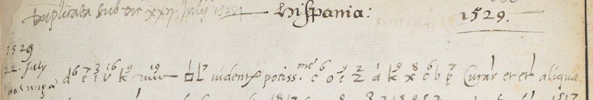
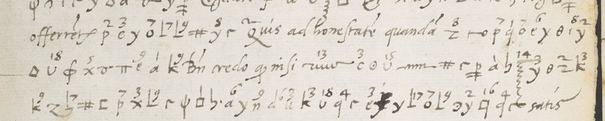
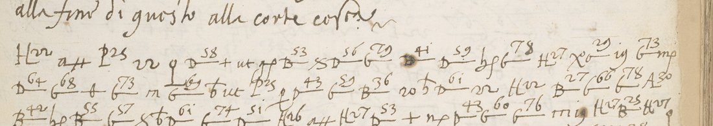

At a glanceKey from external plaintext · 797 of 814 signs (97.9%); Gilino 96.1% with an external key
- The letters
- Girolamo Ghinucci, Bishop of Worcester and Henry VIII’s envoy, to Cardinal Wolsey, duplicate of 22 July 1527. And “el Gilino”, a Milanese agent at the imperial court, to Francesco II Sforza, Duke of Milan, at Cremona, from Paredes de Nava, 15 September 1527.
- Where
- British Library, Cotton MS Vespasian C IV f. 363 (DECODE R8613, dated there 1529) and ff. 214–218 (DECODE R8572, place given as “Daredos”). Both catalogued as not decrypted.
- The ciphers
- Ghinucci’s: a sign stands for a consonant, and a small digit above it picks the syllable (K8 ra, K9 re, K3 ri); bare signs are letters; some signs are code words; many are nulls. Gilino’s: barred letters with two-digit numbers for syllables (B.31–50 ba–gu), plus letters, words and nulls.
- How it was done
- Three other letters of Ghinucci in the same cipher were deciphered when they arrived, and the decipherments survive in print or between the lines. Lining them up with their ciphers gave the key, which was then extended in R8613 itself. For Gilino, a scan of the Sforza key sheets on DECODE found the matching one, filed under another agent.
- What they say
- Ghinucci: the Emperor’s men want to part Henry VIII from Francis I; the French offered three millions for the King’s sons; rumour has Wolsey going to France to cut the English and French churches off from Rome “ad perpetuam divisionem”. Gilino: Gattinara out of favour, Bourbon dead, Genoa lost, Milan to go to the Infante.
- Still open
- 17 single signs in R8613 that occur nowhere else. In Gilino, 9 signs and about 45 doubtful words.
- Credit
- The sibling decipherments are those of Wolsey’s clerks, printed in State Papers VI (1849) and Letters and Papers IV. Satoshi Tomokiyo’s partial table (Cryptiana) gave the first syllables.
01 The letters and the keys
Ghinucci was Henry VIII’s envoy at Charles V’s court in Spain from 1527 to 1529, with Edward Lee and, in 1527, Francis Poyntz. Lee wrote his despatches in an English letter cipher (the Poyntz 1527 page has one). Ghinucci, an Italian, wrote his own Latin reports in a different system of his own. Four of them are on DECODE:
- R8476, Cotton Vesp. C III f. 304: Poissy, 24 December 1526. Printed with its deciphered passages in State Papers of Henry VIII VI (1849) pp. 552–556, from the decipherment kept in the Record Office (L&P IV 2727).
- R8589, Vesp. C IV f. 313: Valladolid, 12 February 1529. L&P IV 5282 prints the Latin decipherment of the whole cipher passage. The decipherer struck each null through with a light stroke.
- R8590, Vesp. C IV f. 315: Valladolid, 15 February 1529, deciphered between the lines (L&P IV 5300).
- R8613, Vesp. C IV f. 363 (old f. 332): headed “Dupplicata sub die xxii Julii 1527”. The binder’s “1529” at the top is where DECODE’s date comes from. L&P IV 3291 lists it as the duplicate of a letter whose original, Cotton Vitellius B IX f. 127, is damaged (“mutilated”), and describes the duplicate as “partly in cipher” with no decipherment beside it. The editors summarised the original in English.

Gilino’s letter, ff. 214–218 of the same volume, is nine pages in Italian, clear passages alternating with cipher. The address leaf reads “Illmo et Exmo Dno Dno Mediolani Duci … Cremone”, and it is signed “Servo el Gilino”. How it came among Wolsey’s papers is not recorded. Its cipher is not Ghinucci’s. The key is DECODE R5258, a sheet in the Milan archive (ASMi Carteggio Sforzesco cart. 1591 no. 24) docketed “Cum equite Bilie / extracta ex cifris”: the key of the Cavaliere Bilia, another Sforza agent, which Gilino also used.
02 Ghinucci’s cipher
Each base sign stands for a consonant row; the small digit above it chooses the syllable, and the order of vowels differs from row to row, with several digits for some syllables. In the K row (r), 2 is ro, 3 ri, 4 ru, 8 ra, and 7 and 9 are both re. In the L row (t), 2 is tu, 3 ta, 4 te, 6 to, 9 ti. A sign with no digit is a single letter, and not the consonant of its row: bare o is p, bare z is t. Two-digit superscripts (12–19) are mostly nulls, and so are some ordinary signs (L7, struck as a null by the decipherer of R8589). A few signs are code words: L8 Regia Majestas, K5 Rex Gallorum, n2 Caesar, y6 Pontifex, d4 Gallia, x1 Hispania, a reversed c with 7 for Dominatio Vestra Reverendissima. There is no word division. The letters drop doubled consonants (comisionis, milionem).
The key was recovered in three steps. R8589’s cipher was transcribed and aligned with the Latin that L&P prints, the decipherer’s strokes marking the nulls. That fixed the system and the commonest syllables. R8590’s interlinear added more. Then R8476 (845 signs) was aligned with the italic passages of State Papers VI, which gave the code words and confirmed the rows; all 42 of its struck signs aligned as nulls. The merged table (key.tsv, about 210 entries) was applied to R8613, and the gaps were filled from R8613’s own context. Each such value was checked wherever it recurs.
The scribe of the duplicate was not consistent with the signs. Two forms collapse in the transcription: h is o in oblatum and milliones but s in fratris and spes, as it is throughout R8476; m serves for r and for x. These are marked in the reading below.
03 Ghinucci to Wolsey, 22 July 1527
Clear text is in roman; the deciphered passages are in italics. [..n] marks n signs not deciphered, (?) a doubtful word. Line breaks of the manuscript are not kept.
Cesarei videntur potissime [..1] habere cupere, ho[..2] curare et aliqualiter sperare ut aliquibus mediis Regiam Majestatem ad se trahant ut saltem a Rege Gallorum separent; et donec hoc sperare posse sibi persuaserit, credo eos nil minus cogitare quam de pace. Et si pinguiores eis offerret conditiones, quamvis ad honestatem quandam verbis dicant se nil aliud cupere. Bene credo quod nisi hec eos spes nutriret, oblatis eis [..1] pinguioribus conditionibus, satis sperari posset [..3] ad … venirent. Et multo plus iudicio meo sperari posset nisi pro certo tenerent amicitiam et unionem inter Regiam Majestatem et Regem Gallorum non diu duraturam. Galli videntur multum, si non nimis, cupere [..1]. Conatusque quantum possunt dum cum consiliariis Caesaris conveniunt, ut divisum habent sermonem(?), ut aliquam ansam dimittatur(?) qua possint ipsi aut nos semper ad colloquia redire; saepeque apud nos instant ut particulariter super hoc apud consiliarios Caesaris tamquam ex Nobis instemus, ostendentes satis aperte cupere se magnopere ut tractatus omnino non excludatur. Ex hoc nimio desiderio credo causam quod per Avemariam diebus preteritis tres milliones obtulisse Caesar Nobis dixit, si modo id verum sit. Ego quidem parum huic rei fidei adhibui donec Tarbensis, volens hoc purgare, id iudicio meo magis approbavit: nuncium .N. fratre in domo sua [invento], voluit ipsumque coram Nobis dicere quod circa hoc mandatum fuerat. Ipse autem non incipiens, ut mihi visum fuit, a principio sed a fine sue commissionis, dixit de Lautrec in discessu ipsius fratris sibi dixisse quod non erat parcendum pro liberatione filiorum, et quod offerret et usque ad millionem. Cum autem, quas audivi, numquam antea fuisset oblatum minus millione, sed bene [..1] satis plus, nullo modo videtur verisimile quod de uno tantum millione Lautrec ageret, sed potius de millione ultra id oblata, quod etiam satis videtur approbari quod eo tempore non tamen forsan sibi de Regia Majestate pollicebantur. Videtur etiam satis verisimilitudinis rei dari quod Nobis innuit Caesar, videlicet fuisse petitam longam dilationem ad illos tres milliones solvendos, solutionemque dividendam in plures [..1] pagas, quod forsan magis Regi Gallorum expediet. Quicquid sit, non dubito D.V.R. de veritate certum lumen habituram.
Graves viri putant eum qui a Caesare ad Pontificem mittitur in nulla habere commissionem super eius liberatione, et hic [..1] divulgari ad obturandum ora(?) obloquentium tam hic quam alibi de Pontificis detentione. A gravi viro intellexi disseminari [..3] istos(?) quod D.V.R.ma veniat in Galliam curaturam inter alia ut ecclesia Anglicana et Gallicana a Romana separetur non quidem durante Pontificis captivitate et ad iuvandum(?) eius liberationem, ut dicitur, [..3] sed ad perpetuam divisionem.
In English. The Imperialists seem above all to want to draw the King’s Majesty to themselves by some means, at least so as to part him from the King of the French; and as long as they persuade themselves they can hope for that, I believe they are thinking of anything rather than peace, even if they were offered better conditions, though for the sake of appearances they say they want nothing else. I am sure that if this hope did not feed them, they could well be expected to come to terms once better conditions were offered; and much more could be hoped, in my judgement, if they did not hold for certain that the friendship and union between the King’s Majesty and the King of the French will not last long. The French seem to want [peace] greatly, if not too much. When they meet the Emperor’s councillors they try to leave some handle by which they or we can always return to talks, and they often press us to urge this on the councillors as if of our own accord, showing openly that they very much want the treaty not to be shut off. From this excessive desire, I believe, came the offer of three millions through Avemaria that the Emperor told us of. I gave it little credit until the bishop of Tarbes, wanting to clear the matter, rather confirmed it: he found the messenger, a friar, at his house and had him say before us what he had been ordered. The friar began not at the beginning but at the end of his commission, and said that Lautrec, when he left, told him that nothing was to be spared for the release of the King’s sons, and to offer up to a million. Since, as I hear, never less than a million had been offered before, it seems unlikely that Lautrec was talking of one million only, rather of a million over what had been offered. The Emperor’s hint to us lends this some likelihood: that a long respite was asked for paying the three millions, and that the payment be divided into several instalments, which perhaps suits the King of the French better. Serious men think that the envoy the Emperor is sending to the Pope has no commission at all for his release, and that this is put about here to stop the mouths of those who speak ill of the Pope’s detention. I heard from a serious man that it is being spread that Your Most Reverend Lordship is coming into France to see to it, among other things, that the English and French churches are separated from the Roman, not only during the Pope’s captivity and to help free him, as is said, but for a perpetual division.

The content agrees point by point with the English summary that L&P IV 3291 gives of the burnt original: the Imperialists’ wish to separate England from France, the three millions offered through Avemaria, the bishop of Tarbes, the friar, Lautrec and the million for the children, the envoy to the Pope without a commission for his release, and the rumour of Wolsey’s journey to divide the churches from Rome. The summary was known before the work began and was used only as a check; the Latin of the cipher passages had not been recovered before.
04 Gilino to Francesco II Sforza, 15 September 1527

The cipher has barred base signs (G written like a 6, B, D, d, o, H, A, P, R) with numbers from 20 to 80, about forty unnumbered signs, and nulls. A one-sign-one-letter solver run on it gave no Italian, as expected for a syllabary. DECODE holds about 377 Sforza key records from the Milan archive. Their contact sheets were scanned for Gilino’s rows. R5256 is of the same family but its syllables differ. R5258 fits: B.31–50 ba…gu, B.51–55 fa…fu, D.51–65 la…nu, 6.56–80 pa…tu, o.33–47 va…zu, H.27 che, R.23 con, D.40 sarà. Applied with a few values added from context, it gives Italian throughout (Italian 4-gram score −1.52 per letter, in the range of real text). The folios run 214r, 214v, 215r, 215v, 216r, 216v, 217r, 217v, 218r; DECODE’s image order mixes them.
What the cipher says, in summary:
- Gattinara, just landed at Barcelona, is in poor favour with the Emperor over two intercepted letters to the Viceroy of Naples: send the Naples galleys to relieve Genoa, and let Lope de Soria spend what is left of the 100,000 ducats of the exchange on the city. The Emperor’s confessor and the secretary Lalemand are his enemies. Since Bourbon’s death the Duke has only Gattinara to rely on, and should have “the Bilia” keep on good terms with him.
- The new Portuguese ambassador brought a letter in the Pope’s own hand to the nuncio, and two briefs asking the Emperor to take the Church under his protection.
- The Abbatino returns to Italy with all he asked for; the Pope had also been negotiating through Gregorio Casale; Paolo Luzzasco is to go over to the Emperor with 300 light horse.
- The French ambassadors swear that Francis I insists the Duke keep Milan; the nuncio has gone to Palencia to watch them.
- On the news from Lombardy the Emperor is said to be revoking the Pope’s liberation. The Ferrarese ambassadors and the Colonna agents call the Pope a traitor and a false pope.
- Andrea da Burgo writes to the Emperor pro opprimenda Italia. The investiture of Milan has been sent to the Infante with 100,000 ducats, for him to come down and defend it.
Measured: 3,111 cipher signs, 122 of them nulls; of the 2,989 that carry text, 9 are not deciphered and about 108 fall in 45 doubtful words, leaving 2,872 (96.1%) that give sense. No decipherment of this letter, on the manuscript or in print, was found.
05 Method
The DECODE images were fetched at full size with the project’s login (the records carry no transcriptions). L&P IV was consulted on British History Online and State Papers VI and VII on the Internet Archive to identify each letter; L&P cites the old Cotton foliation, DECODE the new. The cipher of R8613 was transcribed sign by sign from line crops at about three times the overview scale (r8613_tokens.txt). decode.py applies key.tsv. R8476 and Gilino’s letter were transcribed by sub-agents working from crops, with Gilino’s transcription corrected in 24 places against the key. The neighbouring DECODE records of both letters were opened; all are Lee’s and Poyntz’s despatches in the English cipher. A last pass on R8613 at full resolution re-read two signs (“p10 +” is p+ and a reversed c with 10; “v3” is y3) and settled pinguiores eis and spes nutriret.
06 What remains uncertain
- R8613, first page: line 1, three signs (c; b, t7), in “[..1] habere cupere, ho[..2]”; line 7, one sign (a dot-like mark) after oblatis eis; line 8, three signs (W14, K, h) before ad … venirent; line 11, one sign (Q8) after cupere. Each occurs once.
- R8613, second page: single signs on lines 7, 13 and 16 (bn, d8, b6); three signs after disseminari (line 19) and three before sed ad perpetuam (line 22).
- Values that rest on one place (grade C): u8 o and Q1 i (pinguiores eis), h1 s; and the context words dimittatur, sermonem, ora, istos, marked (?) above. h = s in spes and fratris against h = o elsewhere in R8613 (grade M).
- Gilino: nine signs not deciphered and 45 doubtful words, from the writer’s own a/o and i/e confusions and from signs the image does not separate. They are listed in
gilino/reading_r8572.txt. - Who wrote the Gilino letter: it is signed “el Gilino” and names “the Bilia” in the third person, and the key is the one made “with the Cavaliere Bilia”; a Sforza nomenclator of 1525 (R5287) lists Bilia and Ghilino as two men.
Measured: R8613 has 814 cipher signs, 17 not deciphered; 797 (97.9%) give sense. Gilino 96.1%. Together 3,669 of 3,803 (96.5%).
07 Sources
- British Library, Cotton MS Vespasian C IV f. 363 (old f. 332) and ff. 214–218 (old f. 199 ff.); images via DECODE R8613 and R8572. Siblings: Vesp. C III f. 304 (R8476), Vesp. C IV ff. 313 and 315 (R8589, R8590).
- Key for Gilino: Archivio di Stato di Milano, Carteggio Sforzesco cart. 1591 no. 24, DECODE R5258.
- Letters and Papers, Foreign and Domestic, Henry VIII, vol. IV, ed. J. S. Brewer (1870–76), nos. 2727, 3291, 5282, 5300, on British History Online.
- State Papers, King Henry the Eighth, vol. VI (1849), pp. 552–556 (R8476 with its deciphered passages).
- S. Tomokiyo, Cryptiana, page henryviii.htm: the partial table for the Bishop of Worcester.
- Related pages: Ghinucci, Lee and Poyntz to Wolsey, 1527 (the English cipher of the same embassy); Del Vasto 1527 (the “Garbino” letter of 1528, first grouped with these, is in Ranzo’s initial-letter code and stays open there).
Transcriptions, keys, decoders and readings: targets/superscript/ in the repository.